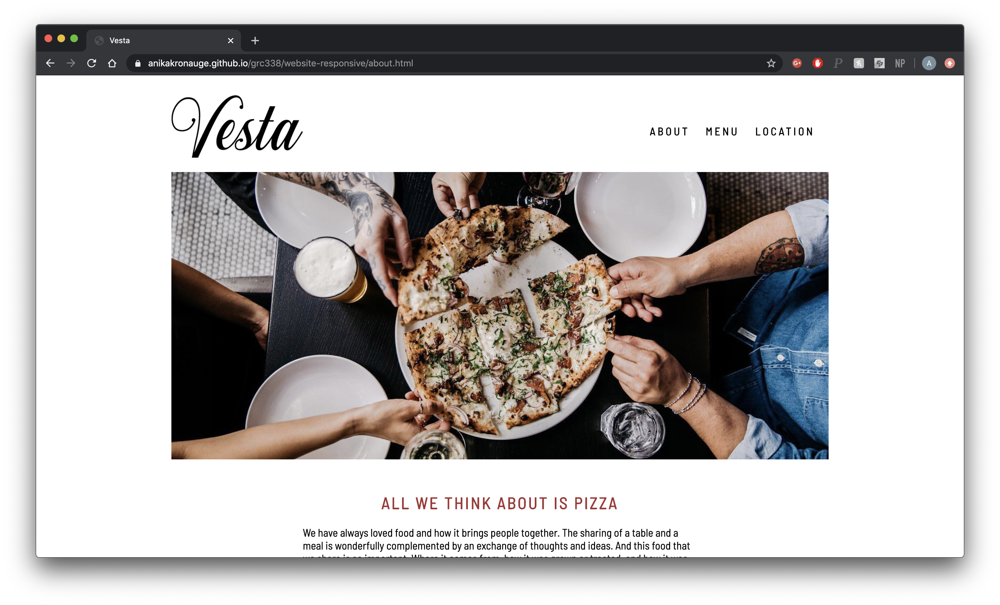

Freelance & design Projects
Sunday Album Audit
For this project, I was commissioned by a talent agency to entirely conceptualize and create a logo for their music blog, a new sector of their business. Through this project, I worked closely with my client to gather information on what they were looking to portray with their new logo. Through careful consideration, I was able to come up with a few different concepts that my client could choose from. Once they chose the half-record logo, I was able to apply necessary tweaks and edits as my client saw fit.
Blk Mrkt Wellness
During my Junior and Senior year of college, I had the pleasure of working side by side with a local San Luis Obispo Entrepreneur. I helped the owner of Blk Mrkt with all of her graphic design needs including; logo design, packaging and labeling design, marketing collateral, as well as web design. Click here to visit the website I designed and maintained using square space.
Graduation Announcements
Upon ordering graduation announcements to send to my family and friends, I realized that I had the software to be able to make my own at a fraction of the price. Once I finished making my own, I was able to make some for my friends as well! Here is an example of one that I made for my friend, Alexis.
Web Design
Throughout the years, I have worked on quite a few different web design projects. I have experience with JavaScript, HTML and CSS as well as website builders like Squarespace.
Vesta Web Re-design
For a recent class project, I was able to take the website of one of my favorite restaurants and create a more simple chic website click here to see the responsive version of the website.
